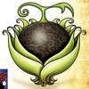
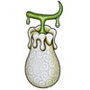
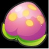
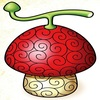
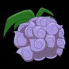
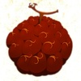

"Riqueza, fama, poder", el hombre que ganó todo lo que este mundo tiene para ofrecer, el Rey de los piratas Gold Roger. A su muerte, las palabras que pronunció arrojaron a innumerables hombres al mar. "¿Mi tesoro? Es tuyo si lo quieres. ¡Encuéntralo! ¡Dejé todo lo que el mundo tiene allí!". Y así, el mundo entró en la gran era pirata. One Piece es la historia de Monkey D. Luffy, un joven que al igual que tantos otros, se propone encontrar el gran tesoro One Piece y convertirse en el rey de los piratas, para lo cual se hace a la mar con el objetivo de armar una tripulación y navegar hasta los confines del mundo. Esta historia sigue su aventura a través de innumerables islas, donde se hará de poderosos aliados e igualmente poderosos rivales, a la vez que se van desvelando distintos secretos sobre la historia de personajes pasados y de un mundo que parece no tener fin.
Camino a Laugh Tale

Shanks en Marcha!
Pondrá finalmente rumbo hacia el legendario tesoro?
Despertar de la Gomu Gomu no mi
Enterate acá todo lo que se sabe hasta ahora de esta fruta legendaria.
Bienvenidos!
Bienvenidos a Laugh Tale, fansite no oficial sin fines de lucro dedicado a esta maravillosa serie. A través de la barra de navegación ubicada más arriba podrán recorrer las distintas páginas donde encontrarán más información sobre el mundo de One Piece y sus personajes.
Océanos y Continentes
El mundo en el que se desarrolla esta historia tiene una geografía un tanto particular: esta formado por un continente enorme conocido como RedLine, el cual abarca toda la circunferencia de la tierra. A su vez, este continente es cruzado ortogonalmente por un océano lineal conocido como Grand Line, el cual también abarca toda la circunferencia de la Tierra. El espacio demarcado por la Grand Line y la RedLine da lugar a cuatro océanos repletos de islas: North Blue, East Blue, South Blue y West Blue.
North Blue: Océano de origen de Sanji y su familia, la organización Germa 66. También es el océano de origen de otros personajes como Law, Akainu y Kizaru

West Blue: Océano de origen de los mugiwaras Nico Robin y Brook. También es el océano de origen de Shanks y de la isla convertida en barco por Gecko Moria, Thriller Bark
Frutas del Diablo
Las frutas del diablo son frutas misteriosas de este mundo que otorgan al que las consume diferentes habilidades, a cambio de quitarles la habilidad de poder moverse en el agua. Existen tres tipos básicos de frutas: Paramecia, Zoan y Logia.
Este tipo de frutas otorgan distintas habilidades físicas a sus usuarios. Suelen considerarse el tipo de fruta más común y débil, aunque en su modo despertado pueden brindar capacidades asombrosas. A continuación se brinda la descripción de algunas de estas frutas.
| Fruta | Foto | Descripción |
| Gomu Gomu |
Esta fruta otorga las características de la goma al portador, tales como poder estirarse, resistencia eléctrica, etc. Usuario actual: Luffy. |
|
| Bara Bara |
Esta fruta otorga al usuario la capacidad de separarse en varias partes. La cantidad de partes en las que se pueda separar depende del dominio del usuario sobre la fruta. Usuario actual: Buggy, el payaso. |
|
| Hana Hana |
Esta fruta otorga al usuario la capacidad de hacer "florecer" partes de su cuerpo donde lo desee. La cantidad de partes y el rango dependen de cuanto control se tenga sobre la fruta. Usuario actual: Nico Robin. |
|
| Yomi Yomi |
Esta fruta otorga le brinda al usuario una segunda vida, o sea, la capacidad de renacer. Además, le permite despegar el alma del cuerpo a voluntad. Usuario actual: Brook. |
|
| Kage Kage |  |
Esta fruta permite un control muy amplio sobre las sombras, tanto propias como ajenas. Puede usarse para separar la sombra de un cuerpo y pegarla a otro cuerpo. Usuario actual: Gecko Moria. |
| Nikyu Nikyu |
Esta fruta brinda al usuario unas pequeñas palmas de oso que le permiten repeler cualquier cosa, ya sea objetos físicos o cosas intangibles como dolor, cansancio, etc. Puede repeler personas para hacerlas viajar a gran velocidad. Usuario actual: Bartholomew Kuma. |
|
| Mero Mero |
Esta fruta permite convertir en piedra a todos aquellos que se sientan atraidos hacia el usuario. Usuario actual: Boa Hancock. |
|
| Gura Gura |
Es considerada la fruta Paramecia más poderosa. Permite al usuario generar ondas de choque como temblores, terremotos y tsunamis. Usuario actual: Barbanegra. Usuario anterior: Barbablanca |
|
| Soru Soru |
Esta fruta permite a su usuario robar el alma de otras personas y usarlas para darle vida a objetos inanimados. Usuario actual: Big Mom. |
|
| Ope Ope |
Esta fruta permite al usuario crear una "sala de operaciones", un espacio esférico a su alrededor donde puede controlar a su antojo lo que se encuentre dentro. Usuario actual: Trafalgar D. Law. |
|
| Doru Doru |  |
El usuario de esta fruta puede convertirse en cera y generarla sólida o líquida para hacer todo tipo de figuras. Usuario actual: Mr. 3. |
| Mane Mane |  |
Esta fruta permite al usuario tomar la apariencia física de toda persona a la que le haya tocado la cara alguna vez. Usuario actual: Mr. 2 Bon Clay. |
Este tipo de frutas permiten a sus usuarios convertirse en animales o una forma híbrida humano-bestia. Se consideran más fuertes que las Paramecia pero más débiles que las Logia, aunque los modelos Zoan mitológicos (fénix, dinosaurios, dragones, etc.) se consideran tan fuertes como una Logia. A continuación algunos modelos.
| Fruta | Foto | Descripción |
| Hito Hito |  |
Esta fruta permite al usuario convertirse en un humano. Usuario actual: Tony Tony Chopper. |
| Hito Hito: Daibutsu |
Otra variante de la Hito Hito, permite al usuario convertirse en un Buda gigante. Usuario actual: Sengoku, el buda. |
|
| Uo Uo: seiryu |
Esta Zoan Mitológica permite al usuario convertirse en un dragón oriental enorme. Usuario actual: Kaido. |
|
| Tori Tori: fénix |
Esta fruta mítica permite al usuario convertirse en un poderoso fénix. Usuario actual: Marco, comandante de la primera división de Barbablanca. |
|
| Neko Neko: Leopardo |
Esta fruta le brinda al usuario la habilidad de convertirse en un poderoso leopardo. Como el resto de las Zoan carnívoras, el usuario de esta fruta posee agresividad y habilidades para el combate aumentadas. Usuario actual: Rob Lucci, del CP-9. |
|
| Inu Inu: Lobo |
Esta fruta permite al usuario convertirse en un poderoso lobo. Usuario actual: Jabra, del CP-9. |
|
| Ushi Ushi: Jirafa |
Esta fruta permite al usuario convertirse en jirafa. Usuario actual: Kaku, del CP-9. |
|
| Ryu Ryu: Allo saurio |
Una Zoan pre histórica, permite al usuario convertirse un un dinosaurio Allosaurio. Usuario actual: X-Drake. |
El tipo más poderoso de fruta del diablo, permite a los usuarios transformarse en fuerzas de la naturaleza. Los usuarios de este tipo de frutas suelen ser invulnerables a los ataques físicos normales, ya que sus cuerpos pasan a estar formados directamente del elemento de su fruta.
| Fruta | Foto | Descripción |
| Mera Mera |
Esta fruta convierte a su usuario en un hombre de fuego, permitiendole lanzar llamaradas de cualquier parte de su cuerpo. Usuario actual: Sabo. Usuario anterior: Portgas D. Ace. |
|
| Moku Moku |
Esta fruta otorga al usuario convertir su cuerpo a voluntad en humo. Usuario actual: Smoker. |
|
| Suna Suna |
El usuario de esta fruta se convierte en un hombre de arena, pudiendo disolverse por completo o invocar grandes tormentas de arena desde su mano. Usuario actual: Crocodile. |
|
| Goro Goro |
Esta fruta permite al usuario convertirse en electricidad, y además le permite invocar rayos y descargas eléctricas a grandes distancias. Usuario actual: God Enel. |
|
| Hie Hie |
El usuario de esta fruta puede convertirse en hielo, así como congelar de manera instantánea todo lo toca. Usuario actual: Aokiji. |
|
| Yami Yami |  |
Esta fruta no se comporta al igual que el resto de las Logia, ya que su usuario no puede convertirse en su elemento (oscuridad). El usuario de esta fruta puede invocar una oscuridad que lo absorbe todo, como si se tratase de un agujero negro. Usuario actual: Barbanegra. |
| Pika Pika |
Esta fruta permite al usuario convertirse en luz, con lo cual puede desplazarse a la velocidad de la luz y disparar rayos de luz de alta potencia. Usuario actual: Kizaru. |
|
| Magu Magu |  |
Una fruta Logia que convierte el cuerpo del usuario en magma. Además, el usuario puede generar enormes cantidades de magma y dispararla como cometas. Usuario actual: Akainu. |
| Gasu Gasu |
Convierte el cuerpo del usuario en gas, con lo que el mismo puede generar cualquier tipo de gas y modificar los gases que se encuentren en contacto con su cuerpo (como el oxígeno de la atmósfera, por ejemplo). Usuario actual: Caesar Clown. |